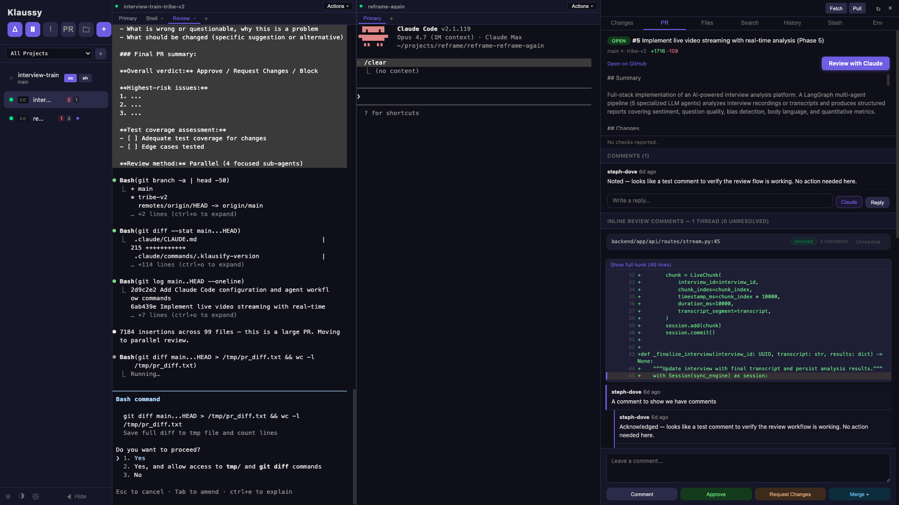

Early access
KLAUSSY
Run Claude Code across every worktree.
In one window.
For the 20× developer.
Klaussy is a macOS app that orchestrates multiple Claude Code sessions across git worktrees, reviews pull requests with AI, and offers tab-autocomplete from a local model — nothing per-keystroke ever leaves your machine.
Requires macOS 12 (Monterey) or later. See full requirements.
What it does
Parallel worktrees, one view
Spawn a worktree per task, each with its own Claude Code instance. Columns, grid, or single-pane view. Switch with a click; no more juggling cds.
Inline AI — locally
Tab-autocomplete as you type, powered by qwen2.5-coder running on your machine via Ollama. ~100ms latency. No code leaves your laptop.
Cmd+K inline edits
Select code, describe the change. Claude streams the replacement live in a diff preview. Accept or reject in-place.
Plan · Debug · Review
A dropdown on every worktree that spawns a dedicated Claude tab running /ultraplan, /debug, or a multi-phase PR review — each on the same worktree, no context loss.
Full PR review surface
Pull in a PR, read the diff with inline comments, run an AI review that breaks into per-finding cards — ignore, implement, or append to PR. CI failures get an AI debug pass too.
Built-in editor
Monaco editor with LSP diagnostics. Open any file, edit, commit straight from the diff panel. AI-generated commit messages optional.
See it in action
Left: a Review action running on one worktree. Middle: another worktree idling. Right: a live GitHub PR with inline comment threads and a review composer.

What you need
- macOS 12 (Monterey) or later. Apple Silicon or Intel.
- Claude Code CLI installed and authenticated. Klaussy orchestrates
claude— it doesn't replace it. - GitHub CLI (gh) authenticated. Required for PR review features.
- Homebrew (optional). Only needed if you opt into local inline autocomplete — Klaussy installs Ollama via
brew.
FAQ
Does my code get sent to third parties?
When you use Claude features, prompts + repo context go to Anthropic via the claude CLI you already trust. GitHub operations go through your local gh. Inline autocomplete runs entirely locally via Ollama and qwen2.5-coder:1.5b — nothing per-keystroke leaves your machine. We don't run a server of our own.
Do I need a Claude subscription?
You need whatever plan your claude CLI is configured for. Klaussy doesn't bill separately for AI usage.
Why the 2 GB download prompt for inline autocomplete?
~500 MB is Ollama's runtime; ~1 GB is the qwen2.5-coder:1.5b model weights. You only see this prompt if you opt in — otherwise a free word-based completer handles Tab.
What happens to my data if I uninstall?
Remove ~/Library/Application Support/Klaussy and ~/Library/Logs/Klaussy for a clean slate. Ollama and its models persist independently; remove via brew uninstall ollama and rm -rf ~/.ollama.
Is this open source?
The application itself is commercial, closed-source. Feedback and bug reports live in a public repo (this one). The bundled open-source components are listed in About → Licenses.